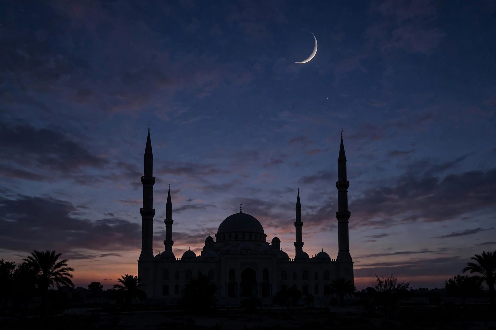

The Islamic calendar, also known as the Hijri calendar or Muslim calendar, is a lunar calendar consisting of 12 months of 29 or 30 days in a year of 354 or 355 days. It is used to determine the dates of Islamic holidays and rituals, and alongside the Gregorian calendar for civil purposes in some Muslim countries, notably Saudi Arabia.
The calendar's epoch — 1 Muharram AH 1 — corresponds to 16 July 622 CE in the Julian calendar, the year of the Hijrah, the Prophet Muhammad's migration from Mecca to Medina. Years are counted "AH" (Anno Hegirae) and are about 11 days shorter than solar years, so Islamic months migrate through all the seasons over a cycle of roughly 33 years.
The twelve months are: Muharram, Safar, Rabiʿ al-Awwal, Rabiʿ al-Thani, Jumada al-Awwal, Jumada al-Thani, Rajab, Shaʿban, Ramadan, Shawwal, Dhu al-Qaʿdah and Dhu al-Hijjah. Four months are held sacred, in which fighting was traditionally forbidden. Ramadan (month 9) is the month of fasting; Dhu al-Hijjah (month 12) is the month of the Hajj pilgrimage.
Classically, a month begins at sunset on the day the young crescent moon (hilal) is first sighted after the new moon; cloudy weather can delay it, so the exact start of Ramadan and of the festivals Eid al-Fitr and Eid al-Adha may differ by a day between countries. The tabular Islamic calendar, used by astronomers and historians, alternates 30- and 29-day months with 11 leap years in a 30-year cycle, adding a day to the final month. Saudi Arabia's Umm al-Qura calendar is a calculated calendar used for civil purposes.
The calendar was instituted under the caliph Umar (c. 638 CE), who chose the year of the Hijrah as the era, rejecting proposals to date from Muhammad's birth or the first revelation. The Qur'an (9:36–37) fixes the number of months at twelve and forbids the pre-Islamic practice of intercalation (nasi) to align the lunar year with the seasons. The Hijri calendar remains the religious calendar of Islam: obligations such as fasting, the Hajj and the annual payment of zakat (reckoned over a lunar year) are all dated by it, although most Muslim-majority states use the Gregorian calendar for administration.